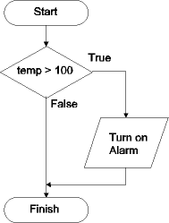
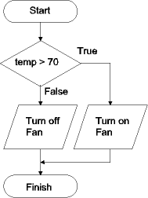
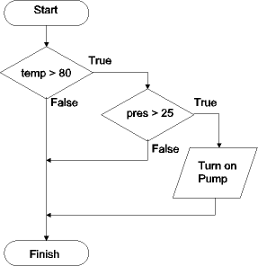
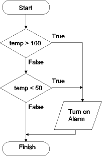
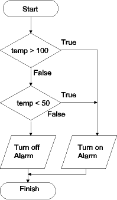
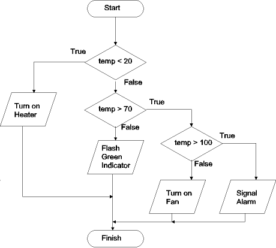
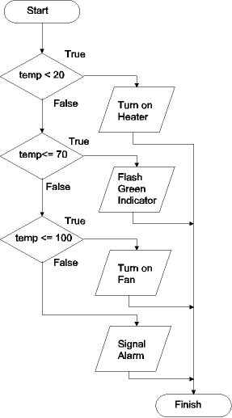

| Previous Section | Next Section | Index | Questions | Search the Text |
Handling alternatives is an important part of most microcontrollers. Selection control structures allow handling these alternative execution paths.
The simplest selection structure implements "if the condition is true, then do this operation." Consider a system with a variable named temp which holds the most recent Celsius temperature measurement of a system. We wish to turn on an alarm if the temperature goes above 100 degrees. This can be represented by the flowchart:

and by the C pseudo-code:
if (temp > 100) {
Turn on alarm
}
In a microcontroller's machine language, the selection structure is implemented using a conditional branch instruction. The conditional expression (temp > 100 in this case) is typically implemented via a compare or test instruction which sets the condition codes. Then the conditional branch instruction used branches on the FALSE of our test to branch around the following action code:
ldaa temp ; Get temperature value
cmpa #100 ; Is it greater than 100?
bls good ; Branch if NOT greater than 100
Turn on Alarm
good: ; program continues...
Often the control structure needed is "if the condition is true then do this operation, else do that operation." There are two alternative blocks of code that can be executed. Considering our previous example involving a temperature sensor, lets say we have a cooling fan. We wish to turn on the cooling fan if the temperature rises above 70 degrees, and turn off the fan if the temperature is not above 70 degrees. This can be expressed in the flowchart:

or in C pseudo-code:
if (temp > 70) {
Turn on Fan
}
else {
Turn off Fan
}
In machine code, we can still use a conditional branch to branch around the temp>70 code, targeting the temp<=70 code. We need to add an unconditional branch after the temp>70 code to branch around the temp<=70 code:
ldaa temp ; Test the temperature
cmpa #70 ; Is it >70?
bls cool ; Branch if NOT greater than 70.
Turn on Fan
bra resume
cool:
Turn off Fan
resume:
Sometimes the conditions are not simple, but involve Boolean expressions. These can be broken down into multiple decision blocks. Consider the problem "if the temperature is greater than 80 and the coolant pressure is greater than 25 then turn on circulating pump." We can represent this problem with two decision blocks:

First we check the temperature. If it is not greater than 80, there is no reason to go any further and we are finished. If the temperature is greater than 80, then we check the pressure. If the pressure is greater than 25, then we turn on the pump and are finished. In C pseudo-code we have:
if (temp > 80 && pres > 25) {
Turn on Pump
}
In C, the && operator is a logical AND operator, as opposed to the bitwise AND function & discussed earlier. Just like the flowchart, the C code does not check the pressure if the temperature is not greater than 80.
The assembly code is:
ldaa temp ; Check the temperature
cmpa #80
bls good ; Branch if NOT greater than 80
ldaa pres ; Check the pressure
cmpa #25
bls good ; Branch if not greater than 25
Turn on pump
good: ; finished
Handing OR conditions is a bit more challenging. Consider a new alarm if the temperature goes above 100 degrees or goes below 50 degrees. Again, there are two decision blocks, and we can represent the algorithm with this flowchart:

Either one of the two conditions will cause the alarm to go on. If the first condition is true, we can turn on the alarm without even checking the second condition. In C pseudocode we get:
if (temp > 100 || temp < 50) {
Turn on Alarm
}
In C, the || operator is a logical OR operator, as opposed to the bitwise OR function | discussed earlier. Just like the flowchart, the C code only does one comparison if the temperature is greater than 100.
When we write the assembler code, the conditional branch after the first test takes the branch if the condition is true. This is to skip the second test. The code:
ldaa temp ; Get the temperature
cmpa #100
bhi bad ; branch if >100 (and turn on alarm)
cmpa #50 ; compare temperature to 50
bhs good ; branch if temperature not less than 50
bad: ; temperature out of range
Turn on Alarm
good: ; finished
Of course one problem with this alarm code is there is nothing to turn the alarm off if the temperature goes back in range. For that we need the If..Then..Else type of structure. The flowchart is very similar:

and the implementation takes only additional code to turn off the alarm, and an unconditional branch, shown in RED:
ldaa temp ; Get the temperature
cmpa #100
bhi bad ; branch if >100 (and turn on alarm)
cmpa #50 ; compare temperature to 50
bhs good ; branch if temperature not less than 50
bad: ; temperature out of range
Turn on Alarm
bra finish
good:
Turn off Alarm
finish: ; finished
Sometimes there are more than two alternatives. In this case a decision tree is used. The name comes from the tree-like shape of the flowchart implementing it. Consider the following flowchart:

In this case we have four different outcomes based on three conditions. In C, this would be implemented using nested if statements. However tree structures are much easier to comprehend as flowcharts. The important points to consider when writing the assembler code are:
Implementing the algorithm:
ldaa temp ; get the temperature
cmpa #20
blo heater ; turn on heater if temp < 20
cmpa #70
bls good ; flash green if not temp > 70
cmpa #100
bls fan ; turn on fan if not temp > 100
Signal Alarm
bra resume
heater:
Turn on Heater
bra resume
good:
Flash Green Indicator
bra resume
fan:
Turn on Fan
resume: ; finished
Sometimes the flowchart resembles a ladder rather than a tree. In fact the preceding example can be redrawn as a ladder. This is not true for the general case! In the ladder structure, the tests are performed consecutively until one is successful.

This is easiest written as consecutive If-Then-Else type constructs. Keep in mind that this is functionally identical with the preceding code:
ldaa temp ; check temperature
cmpa #20 ; Temp < 20?
bhs L1 ; branch if not
Turn on Heater
bra resume
L1: cmpa #70 ; Temp <= 70?
bhi L2 ; branch if not
Flash Green Indicator
bra resume
L2: cmpa #100 ; Temp <= 100?
bhi L3 ; branch if not
Turn on Fan
bra resume
L3: Signal Alarm
resume: ; finished
Continue with Bitwise Boolean Operations.
Return to the Index.